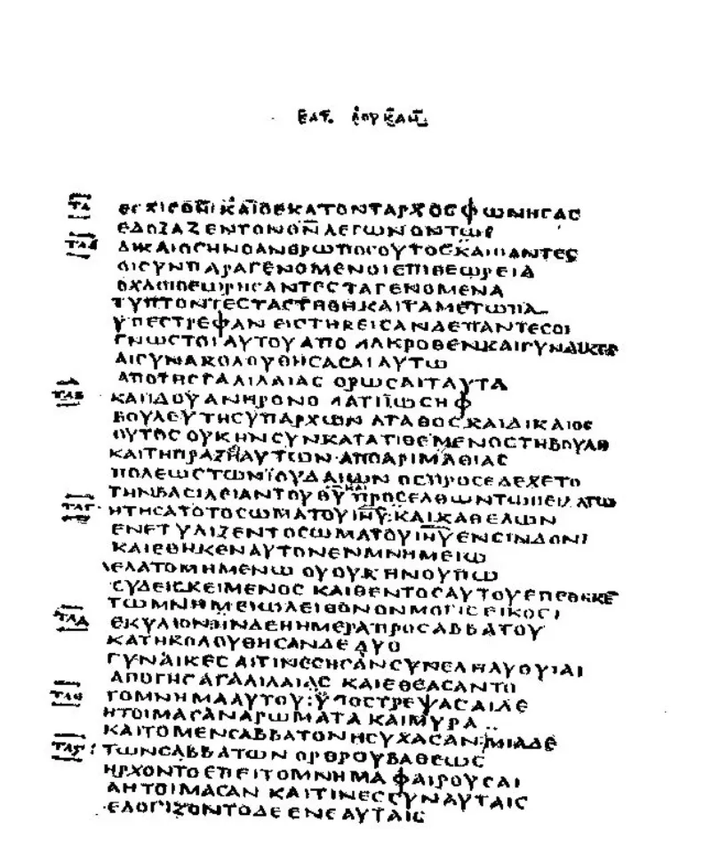
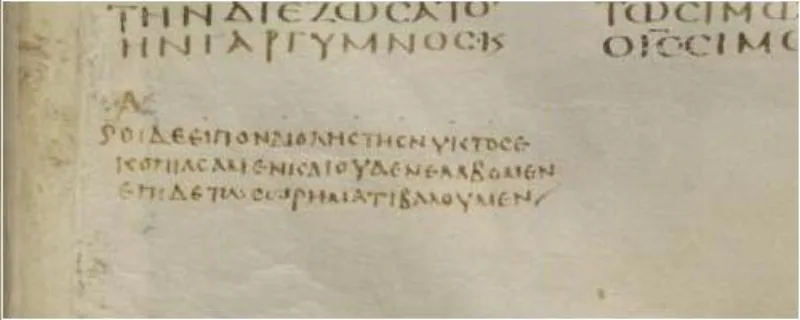

Witness defenders have a real answer here. Say so before your friend does.
Jesus speaks to the thief dying beside him. Most Bibles read: "Truly I tell you, today you will be with me in paradise." Their Bible moves the comma: "Truly I tell you today, you will be with me in paradise." Now Jesus is only noting the day he is speaking.
It guards two teachings at once. Witnesses teach that the dead know nothing, so the thief could not be conscious that day.
They also teach two futures: heaven for a few, earth for the rest. The thief belongs to the earthly group.
The oldest Greek copies carry almost no punctuation. So no Bible can claim manuscript backing for its comma.
Codex Vaticanus has a point after the word for "today." The Curetonian Syriac, from the 400s, reads it their way. Hesychius of Jerusalem, who died about 434, reports readers who punctuated like this.
Rotherham's Emphasized Bible does the same. "I tell you this day" is also a solemn Hebrew way of speaking (Deuteronomy 30:18).
And Jesus was in the grave until the third day (Acts 10:40).
The phrase "truly I say to you" occurs over 70 times in the Gospels. Not once does a time word attach to the formula instead of the message.
And it is an odd thing to say at all. He is dying beside the man he is speaking to.
Genuinely arguable, both ways. Most textual scholars keep the usual comma, but that is a judgment, not a proof.
Use this to show how doctrine steers small choices, not as a charge of fraud.
"Where else in the Gospels does 'truly I tell you' need the word today attached to it?"


The oldest Greek copies had no punctuation, and ancient readers put the comma their way.
The earliest Greek manuscripts had no punctuation. So no translation can claim manuscript backing for its comma. Codex Vaticanus actually has a point after semeron, 'today.' The Curetonian Syriac, from the 5th century, reads 'Truly I say to you today, that with me you will be...' Hesychius of Jerusalem died about 434. He reports readers who put the comma just where the NWT puts it. So this is an ancient reading, not a Watchtower invention. Rotherham's Emphasized Bible reads the same way.
'I tell you this day' is also a solemn Hebrew way of speaking, as in Deuteronomy 30:18. It is natural on the lips of a dying Jewish teacher. And Jesus himself was not in paradise that day. He was in the grave until the third day (Acts 10:40).
A fair fight. Use it to show how doctrine steers small choices, not fraud.
The NWT's rendering is doctrinally motivated. But it has genuinely ancient attestation in the Curetonian Syriac and in Hesychius' report. And the point about manuscript punctuation is simply true.
Against it stand the 70-plus uses of the amen formula. Nowhere else is it modified by 'today.' There is also the emptiness of the sentence. Jesus solemnly notes that he is speaking today, to a man dying beside him.
Most textual scholars side with the traditional comma. But that is a probability judgment, not a proof. Grade it contested. Use it to show how doctrine steers supposedly neutral decisions. Do not use it as a standalone charge of mistranslation.